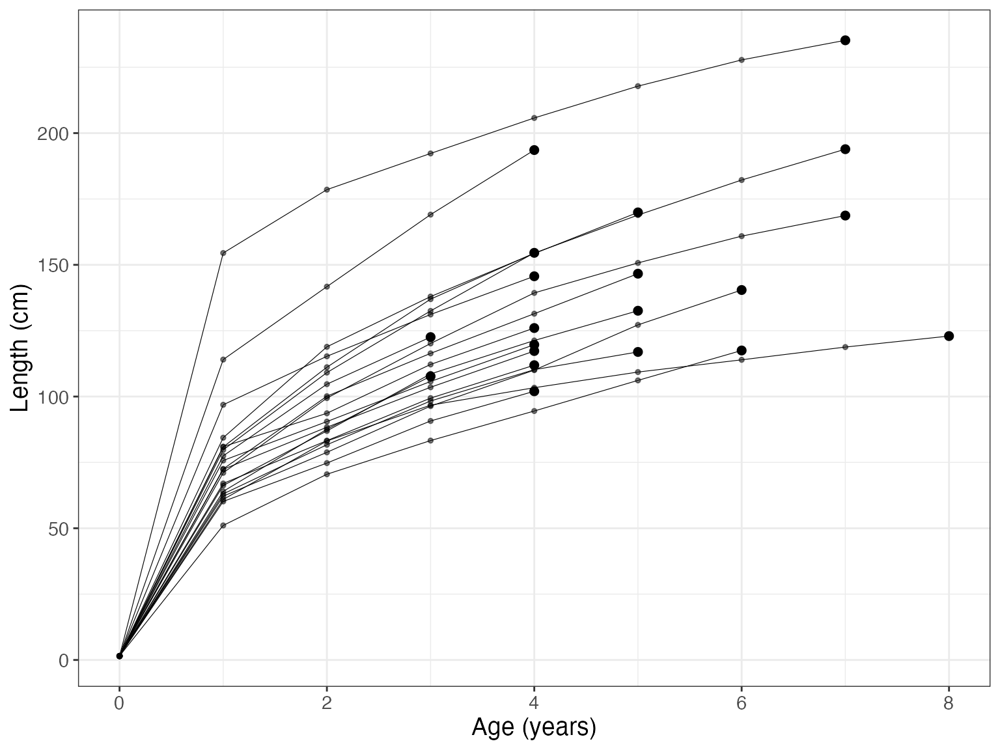
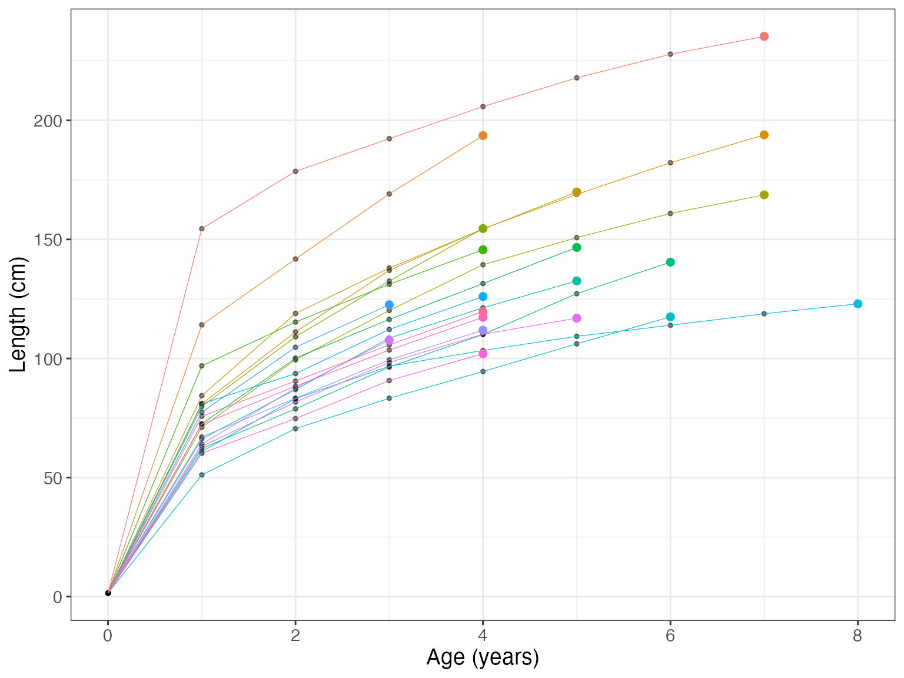
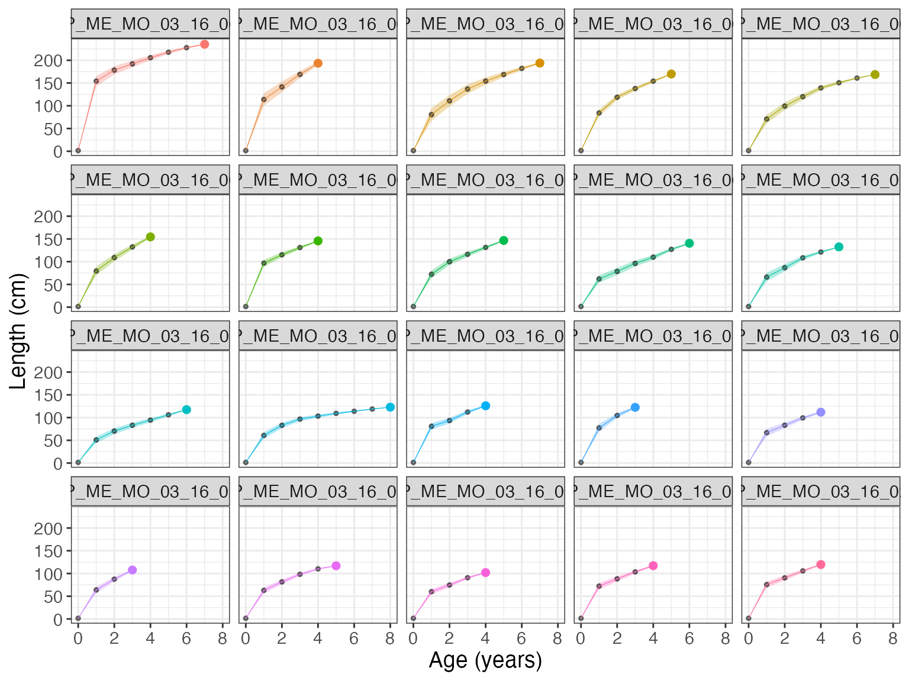
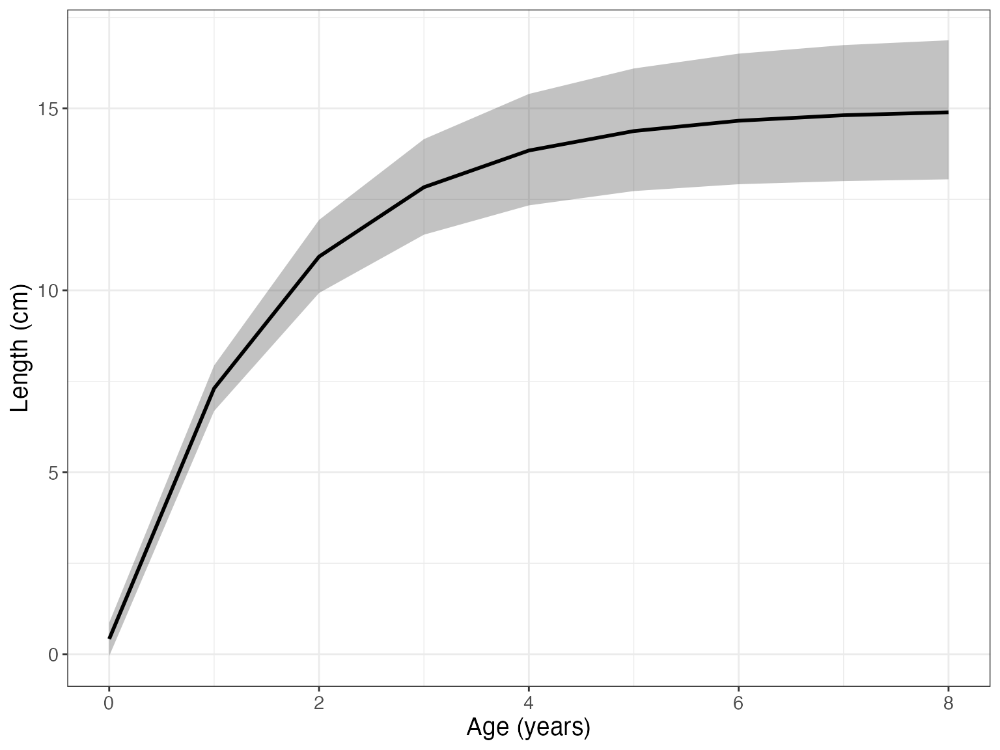
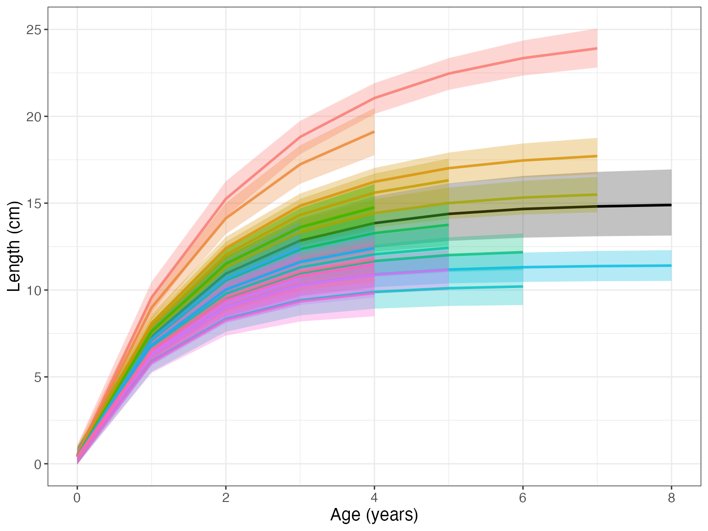
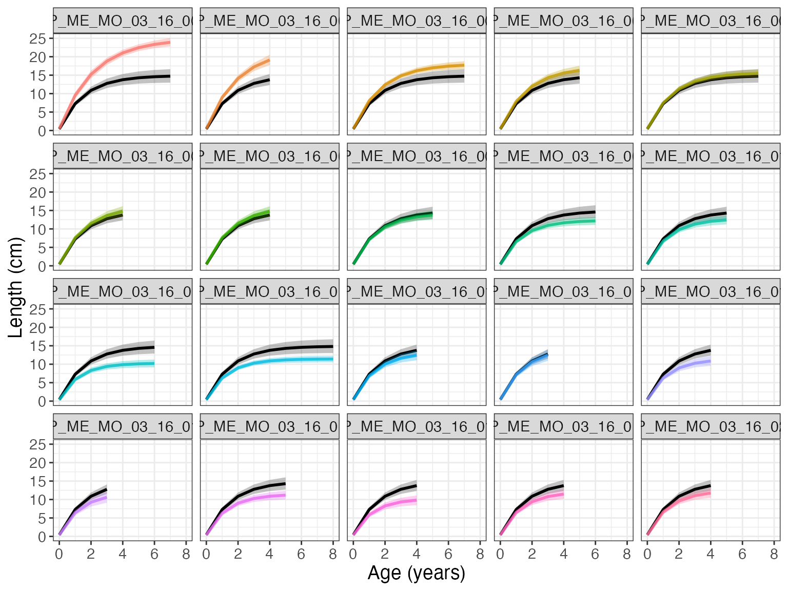

In this vignette, we provide an introduction to fishgrowbot through a case study. For theoretical background of the methodology, see Morat et al. (2020)
First things first: we need to load some packages.
library(fishgrowbot)
library(dplyr)
#>
#> Attaching package: 'dplyr'
#> The following objects are masked from 'package:stats':
#>
#> filter, lag
#> The following objects are masked from 'package:base':
#>
#> intersect, setdiff, setequal, unionTo introduce the functionalities of fishgrowbot, we look at an example for Epinephelus merra. The function bcalc() returns both a dataframe with the back-calculated lengths and their uncertainty and the model object for more details on the fit of the bc stan model.
The input data should contain:
# get data
em <- dplyr::filter(fishgrowbot::coral_reef_fishes_data,
species == "Epinephelus merra",
location == "Moorea")
# back-calculation
bc <- fishgrowbot::bcalc(data = em)
#>
#> SAMPLING FOR MODEL 'stan_bcalc' NOW (CHAIN 1).
#> Chain 1:
#> Chain 1: Gradient evaluation took 4.1e-05 seconds
#> Chain 1: 1000 transitions using 10 leapfrog steps per transition would take 0.41 seconds.
#> Chain 1: Adjust your expectations accordingly!
#> Chain 1:
#> Chain 1:
#> Chain 1: Iteration: 1 / 2000 [ 0%] (Warmup)
#> Chain 1: Iteration: 200 / 2000 [ 10%] (Warmup)
#> Chain 1: Iteration: 400 / 2000 [ 20%] (Warmup)
#> Chain 1: Iteration: 600 / 2000 [ 30%] (Warmup)
#> Chain 1: Iteration: 800 / 2000 [ 40%] (Warmup)
#> Chain 1: Iteration: 1000 / 2000 [ 50%] (Warmup)
#> Chain 1: Iteration: 1001 / 2000 [ 50%] (Sampling)
#> Chain 1: Iteration: 1200 / 2000 [ 60%] (Sampling)
#> Chain 1: Iteration: 1400 / 2000 [ 70%] (Sampling)
#> Chain 1: Iteration: 1600 / 2000 [ 80%] (Sampling)
#> Chain 1: Iteration: 1800 / 2000 [ 90%] (Sampling)
#> Chain 1: Iteration: 2000 / 2000 [100%] (Sampling)
#> Chain 1:
#> Chain 1: Elapsed Time: 0.718332 seconds (Warm-up)
#> Chain 1: 0.202083 seconds (Sampling)
#> Chain 1: 0.920415 seconds (Total)
#> Chain 1:
#>
#> SAMPLING FOR MODEL 'stan_bcalc' NOW (CHAIN 2).
#> Chain 2:
#> Chain 2: Gradient evaluation took 2.2e-05 seconds
#> Chain 2: 1000 transitions using 10 leapfrog steps per transition would take 0.22 seconds.
#> Chain 2: Adjust your expectations accordingly!
#> Chain 2:
#> Chain 2:
#> Chain 2: Iteration: 1 / 2000 [ 0%] (Warmup)
#> Chain 2: Iteration: 200 / 2000 [ 10%] (Warmup)
#> Chain 2: Iteration: 400 / 2000 [ 20%] (Warmup)
#> Chain 2: Iteration: 600 / 2000 [ 30%] (Warmup)
#> Chain 2: Iteration: 800 / 2000 [ 40%] (Warmup)
#> Chain 2: Iteration: 1000 / 2000 [ 50%] (Warmup)
#> Chain 2: Iteration: 1001 / 2000 [ 50%] (Sampling)
#> Chain 2: Iteration: 1200 / 2000 [ 60%] (Sampling)
#> Chain 2: Iteration: 1400 / 2000 [ 70%] (Sampling)
#> Chain 2: Iteration: 1600 / 2000 [ 80%] (Sampling)
#> Chain 2: Iteration: 1800 / 2000 [ 90%] (Sampling)
#> Chain 2: Iteration: 2000 / 2000 [100%] (Sampling)
#> Chain 2:
#> Chain 2: Elapsed Time: 0.625257 seconds (Warm-up)
#> Chain 2: 0.219762 seconds (Sampling)
#> Chain 2: 0.845019 seconds (Total)
#> Chain 2:
#>
#> SAMPLING FOR MODEL 'stan_bcalc' NOW (CHAIN 3).
#> Chain 3:
#> Chain 3: Gradient evaluation took 2.2e-05 seconds
#> Chain 3: 1000 transitions using 10 leapfrog steps per transition would take 0.22 seconds.
#> Chain 3: Adjust your expectations accordingly!
#> Chain 3:
#> Chain 3:
#> Chain 3: Iteration: 1 / 2000 [ 0%] (Warmup)
#> Chain 3: Iteration: 200 / 2000 [ 10%] (Warmup)
#> Chain 3: Iteration: 400 / 2000 [ 20%] (Warmup)
#> Chain 3: Iteration: 600 / 2000 [ 30%] (Warmup)
#> Chain 3: Iteration: 800 / 2000 [ 40%] (Warmup)
#> Chain 3: Iteration: 1000 / 2000 [ 50%] (Warmup)
#> Chain 3: Iteration: 1001 / 2000 [ 50%] (Sampling)
#> Chain 3: Iteration: 1200 / 2000 [ 60%] (Sampling)
#> Chain 3: Iteration: 1400 / 2000 [ 70%] (Sampling)
#> Chain 3: Iteration: 1600 / 2000 [ 80%] (Sampling)
#> Chain 3: Iteration: 1800 / 2000 [ 90%] (Sampling)
#> Chain 3: Iteration: 2000 / 2000 [100%] (Sampling)
#> Chain 3:
#> Chain 3: Elapsed Time: 0.666348 seconds (Warm-up)
#> Chain 3: 0.208402 seconds (Sampling)
#> Chain 3: 0.87475 seconds (Total)
#> Chain 3:
#>
#> SAMPLING FOR MODEL 'stan_bcalc' NOW (CHAIN 4).
#> Chain 4:
#> Chain 4: Gradient evaluation took 2.4e-05 seconds
#> Chain 4: 1000 transitions using 10 leapfrog steps per transition would take 0.24 seconds.
#> Chain 4: Adjust your expectations accordingly!
#> Chain 4:
#> Chain 4:
#> Chain 4: Iteration: 1 / 2000 [ 0%] (Warmup)
#> Chain 4: Iteration: 200 / 2000 [ 10%] (Warmup)
#> Chain 4: Iteration: 400 / 2000 [ 20%] (Warmup)
#> Chain 4: Iteration: 600 / 2000 [ 30%] (Warmup)
#> Chain 4: Iteration: 800 / 2000 [ 40%] (Warmup)
#> Chain 4: Iteration: 1000 / 2000 [ 50%] (Warmup)
#> Chain 4: Iteration: 1001 / 2000 [ 50%] (Sampling)
#> Chain 4: Iteration: 1200 / 2000 [ 60%] (Sampling)
#> Chain 4: Iteration: 1400 / 2000 [ 70%] (Sampling)
#> Chain 4: Iteration: 1600 / 2000 [ 80%] (Sampling)
#> Chain 4: Iteration: 1800 / 2000 [ 90%] (Sampling)
#> Chain 4: Iteration: 2000 / 2000 [100%] (Sampling)
#> Chain 4:
#> Chain 4: Elapsed Time: 0.668641 seconds (Warm-up)
#> Chain 4: 0.198946 seconds (Sampling)
#> Chain 4: 0.867587 seconds (Total)
#> Chain 4:
head(bc$lengths)
#> id age l_m l_sd l_lb l_ub
#> 1 EP_ME_MO_03_16_001 0 1.5000 1.097091e-15 1.5000 1.5000
#> 2 EP_ME_MO_03_16_001 1 154.4831 5.742962e+00 143.3512 165.9050
#> 3 EP_ME_MO_03_16_001 2 178.5402 4.536492e+00 169.6656 187.4954
#> 4 EP_ME_MO_03_16_001 3 192.2825 3.712439e+00 184.9857 199.5823
#> 5 EP_ME_MO_03_16_001 4 205.7548 2.817732e+00 200.1927 211.2752
#> 6 EP_ME_MO_03_16_001 5 217.8278 1.947468e+00 213.9697 221.6315The function bcplot helps visualize the back calculation. Some examples:
bcplot(bc$lengths)
bcplot(bc$lengths, colorid = TRUE)
bcplot(bc$lengths, colorid = TRUE, facet = TRUE, error = TRUE)
Then, we can fit the hierarchical von Bertalanffy growth model that allows for the estimation of multiple parameters. Importantly, length measures should be given in cm.
# fit growth model
growthmodel <- fishgrowbot::growthreg(length = bc$lengths$l_m / 10,
age = bc$lengths$age,
id = bc$lengths$id,
lmax = 32,
linf_m = 28,
linf_sd = 5,
l0_m = 0.15,
l0_sd = 0.015,
iter = 4000,
open_progress = FALSE,
plot = FALSE)
#>
#> SAMPLING FOR MODEL 'vonbert' NOW (CHAIN 1).
#> Chain 1:
#> Chain 1: Gradient evaluation took 9.2e-05 seconds
#> Chain 1: 1000 transitions using 10 leapfrog steps per transition would take 0.92 seconds.
#> Chain 1: Adjust your expectations accordingly!
#> Chain 1:
#> Chain 1:
#> Chain 1: Iteration: 1 / 4000 [ 0%] (Warmup)
#> Chain 1: Iteration: 400 / 4000 [ 10%] (Warmup)
#> Chain 1: Iteration: 800 / 4000 [ 20%] (Warmup)
#> Chain 1: Iteration: 1200 / 4000 [ 30%] (Warmup)
#> Chain 1: Iteration: 1600 / 4000 [ 40%] (Warmup)
#> Chain 1: Iteration: 2000 / 4000 [ 50%] (Warmup)
#> Chain 1: Iteration: 2001 / 4000 [ 50%] (Sampling)
#> Chain 1: Iteration: 2400 / 4000 [ 60%] (Sampling)
#> Chain 1: Iteration: 2800 / 4000 [ 70%] (Sampling)
#> Chain 1: Iteration: 3200 / 4000 [ 80%] (Sampling)
#> Chain 1: Iteration: 3600 / 4000 [ 90%] (Sampling)
#> Chain 1: Iteration: 4000 / 4000 [100%] (Sampling)
#> Chain 1:
#> Chain 1: Elapsed Time: 10.2501 seconds (Warm-up)
#> Chain 1: 7.91898 seconds (Sampling)
#> Chain 1: 18.1691 seconds (Total)
#> Chain 1:
#>
#> SAMPLING FOR MODEL 'vonbert' NOW (CHAIN 2).
#> Chain 2:
#> Chain 2: Gradient evaluation took 6.4e-05 seconds
#> Chain 2: 1000 transitions using 10 leapfrog steps per transition would take 0.64 seconds.
#> Chain 2: Adjust your expectations accordingly!
#> Chain 2:
#> Chain 2:
#> Chain 2: Iteration: 1 / 4000 [ 0%] (Warmup)
#> Chain 2: Iteration: 400 / 4000 [ 10%] (Warmup)
#> Chain 2: Iteration: 800 / 4000 [ 20%] (Warmup)
#> Chain 2: Iteration: 1200 / 4000 [ 30%] (Warmup)
#> Chain 2: Iteration: 1600 / 4000 [ 40%] (Warmup)
#> Chain 2: Iteration: 2000 / 4000 [ 50%] (Warmup)
#> Chain 2: Iteration: 2001 / 4000 [ 50%] (Sampling)
#> Chain 2: Iteration: 2400 / 4000 [ 60%] (Sampling)
#> Chain 2: Iteration: 2800 / 4000 [ 70%] (Sampling)
#> Chain 2: Iteration: 3200 / 4000 [ 80%] (Sampling)
#> Chain 2: Iteration: 3600 / 4000 [ 90%] (Sampling)
#> Chain 2: Iteration: 4000 / 4000 [100%] (Sampling)
#> Chain 2:
#> Chain 2: Elapsed Time: 9.19704 seconds (Warm-up)
#> Chain 2: 10.994 seconds (Sampling)
#> Chain 2: 20.191 seconds (Total)
#> Chain 2:
#>
#> SAMPLING FOR MODEL 'vonbert' NOW (CHAIN 3).
#> Chain 3:
#> Chain 3: Gradient evaluation took 6.4e-05 seconds
#> Chain 3: 1000 transitions using 10 leapfrog steps per transition would take 0.64 seconds.
#> Chain 3: Adjust your expectations accordingly!
#> Chain 3:
#> Chain 3:
#> Chain 3: Iteration: 1 / 4000 [ 0%] (Warmup)
#> Chain 3: Iteration: 400 / 4000 [ 10%] (Warmup)
#> Chain 3: Iteration: 800 / 4000 [ 20%] (Warmup)
#> Chain 3: Iteration: 1200 / 4000 [ 30%] (Warmup)
#> Chain 3: Iteration: 1600 / 4000 [ 40%] (Warmup)
#> Chain 3: Iteration: 2000 / 4000 [ 50%] (Warmup)
#> Chain 3: Iteration: 2001 / 4000 [ 50%] (Sampling)
#> Chain 3: Iteration: 2400 / 4000 [ 60%] (Sampling)
#> Chain 3: Iteration: 2800 / 4000 [ 70%] (Sampling)
#> Chain 3: Iteration: 3200 / 4000 [ 80%] (Sampling)
#> Chain 3: Iteration: 3600 / 4000 [ 90%] (Sampling)
#> Chain 3: Iteration: 4000 / 4000 [100%] (Sampling)
#> Chain 3:
#> Chain 3: Elapsed Time: 8.38221 seconds (Warm-up)
#> Chain 3: 11.9217 seconds (Sampling)
#> Chain 3: 20.304 seconds (Total)
#> Chain 3:
#>
#> SAMPLING FOR MODEL 'vonbert' NOW (CHAIN 4).
#> Chain 4:
#> Chain 4: Gradient evaluation took 6.6e-05 seconds
#> Chain 4: 1000 transitions using 10 leapfrog steps per transition would take 0.66 seconds.
#> Chain 4: Adjust your expectations accordingly!
#> Chain 4:
#> Chain 4:
#> Chain 4: Iteration: 1 / 4000 [ 0%] (Warmup)
#> Chain 4: Iteration: 400 / 4000 [ 10%] (Warmup)
#> Chain 4: Iteration: 800 / 4000 [ 20%] (Warmup)
#> Chain 4: Iteration: 1200 / 4000 [ 30%] (Warmup)
#> Chain 4: Iteration: 1600 / 4000 [ 40%] (Warmup)
#> Chain 4: Iteration: 2000 / 4000 [ 50%] (Warmup)
#> Chain 4: Iteration: 2001 / 4000 [ 50%] (Sampling)
#> Chain 4: Iteration: 2400 / 4000 [ 60%] (Sampling)
#> Chain 4: Iteration: 2800 / 4000 [ 70%] (Sampling)
#> Chain 4: Iteration: 3200 / 4000 [ 80%] (Sampling)
#> Chain 4: Iteration: 3600 / 4000 [ 90%] (Sampling)
#> Chain 4: Iteration: 4000 / 4000 [100%] (Sampling)
#> Chain 4:
#> Chain 4: Elapsed Time: 9.86349 seconds (Warm-up)
#> Chain 4: 8.72955 seconds (Sampling)
#> Chain 4: 18.593 seconds (Total)
#> Chain 4:
# summary growth parameters
growthmodel$summary
#> mean se_mean sd 2.5% 25% 50%
#> k 0.64981773 0.0013033713 0.05315044 0.55339963 0.61320870 0.64776535
#> linf 14.85511873 0.0381816748 1.00762410 12.99827733 14.17407131 14.80918704
#> l0 0.42376977 0.0033723317 0.23606622 -0.03915235 0.26387536 0.42749406
#> t0 -0.04568492 0.0003782997 0.02657041 -0.10106319 -0.06310134 -0.04490312
#> kmax 0.39804926 0.0007098593 0.04056147 0.32570905 0.36953984 0.39623905
#> 75% 97.5%
#> k 0.68363036 0.760255900
#> linf 15.46894745 17.021170795
#> l0 0.58280025 0.891734639
#> t0 -0.02720253 0.003851214
#> kmax 0.42407057 0.482156128Now we can visualize the fit with the function gmplot().
gmplot(growthmodel)
Setting id = TRUE, we can see the individual growth curves.
gmplot(growthmodel, id = TRUE)
If there are many individuals, the id graph can quickly get crowded. Set facet = TRUE to have a subplot per individual.
gmplot(growthmodel, id = TRUE, facet = TRUE)